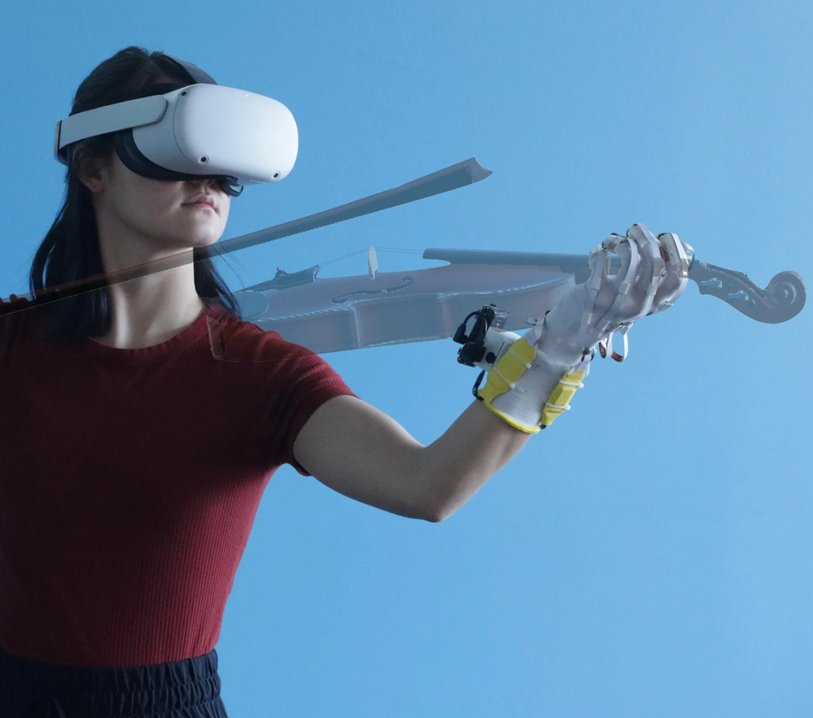
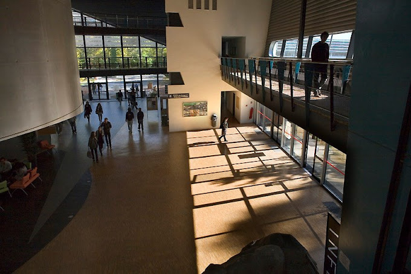
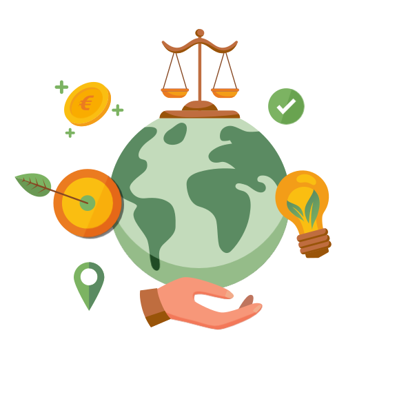

Notre Vision
Chez Mimica, notre mission est d’apporter une révolution dans la manière dont les compétences manuelles sont acquises. Grâce à notre technologie innovante et nos gants haptiques, nous souhaitons transformer l’apprentissage manuel en une expérience immersive, intuitive et rapide, accessible à tous.
Nous croyons fermement que la technologie doit être un pont entre les rêves et la réalité, en permettant à chaque individu d’atteindre son plein potentiel. Nous avons pour ambition de rendre l’apprentissage accessible, quel que soit l’âge, la situation ou le contexte, en brisant les barrières grâce à des outils à la pointe de l’innovation.


Notre Histoire
L’aventure Mimica commence en 2025, dans les locaux de l’IUT de Fontainebleau. Trois étudiants ambitieux, Canpolat DEMIRCI--ÖZMEN, Théo ANASTASIO et Mathys POTIER, rêvaient d’apporter une innovation significative dans la vie quotidienne à travers la technologie. Leur passion commune pour l’informatique, l’ergonomie et la réalité virtuelle les a poussés à concevoir des gants haptiques révolutionnaires, capables de guider chaque utilisateur dans son apprentissage.
Ce projet a rapidement évolué pour devenir une start-up ambitieuse, avec une volonté affirmée de transformer les défis en opportunités. Le nom "Mimica" incarne cette vision : il évoque l’idée de mimique et de reproduction de gestes précis, tout en étant court, mémorable et adapté à une audience internationale.
Aujourd’hui, Mimica symbolise une alliance parfaite entre audace, innovation et impact positif. L’entreprise se distingue par sa capacité à rendre accessible des technologies autrefois réservées à un cercle restreint, en créant des solutions pratiques pour l’éducation, la rééducation médicale et le sport.
Nos Valeurs et Engagements
L’éthique et les valeurs de Mimica forment la base de toutes nos actions. Nous nous engageons à créer des solutions qui non seulement innovent, mais aussi respectent les individus et leur environnement.
Nous croyons profondément en l’égalité des chances. Chaque individu, peu importe son âge, son genre ou son origine, mérite d’avoir accès aux outils qui lui permettront de réaliser son potentiel. Nos politiques internes encouragent une inclusivité totale, où chaque talent peut s’épanouir dans un environnement respectueux et collaboratif.
La protection de l’environnement est également une priorité. Nous intégrons des pratiques durables à toutes les étapes de notre production, en choisissant des matériaux respectueux de la nature et en réduisant notre empreinte écologique. Chez Mimica, nous croyons que l’innovation doit aller de pair avec la durabilité.
Enfin, notre entreprise s’engage dans des initiatives humanitaires. Nous collaborons avec des associations caritatives pour rendre nos produits accessibles aux personnes les plus défavorisées. Que ce soit pour des rééducations médicales ou des apprentissages dans des régions sous-développées, nous croyons que la technologie peut avoir un impact significatif sur la vie de chacun.
